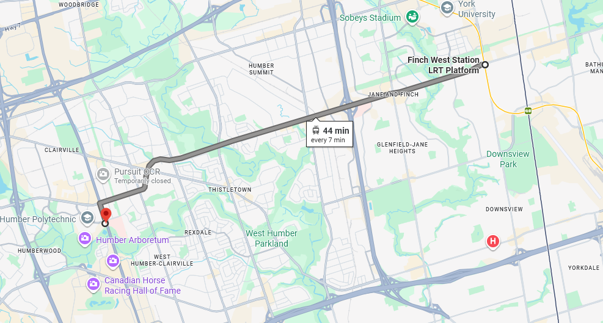
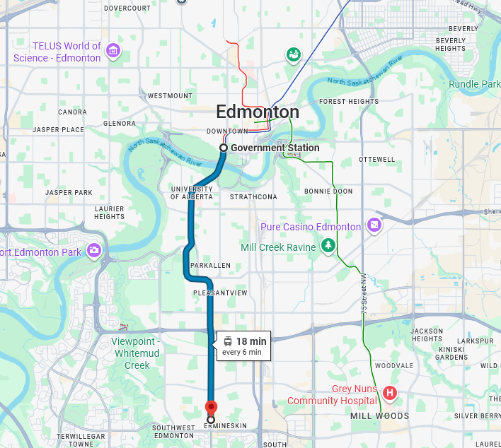
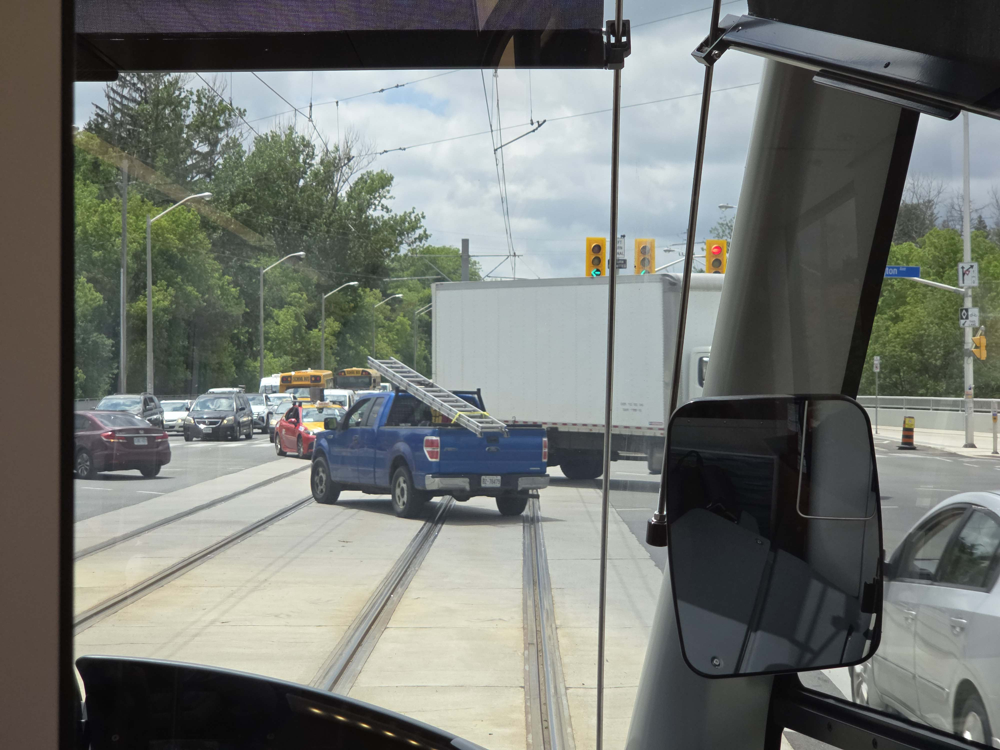
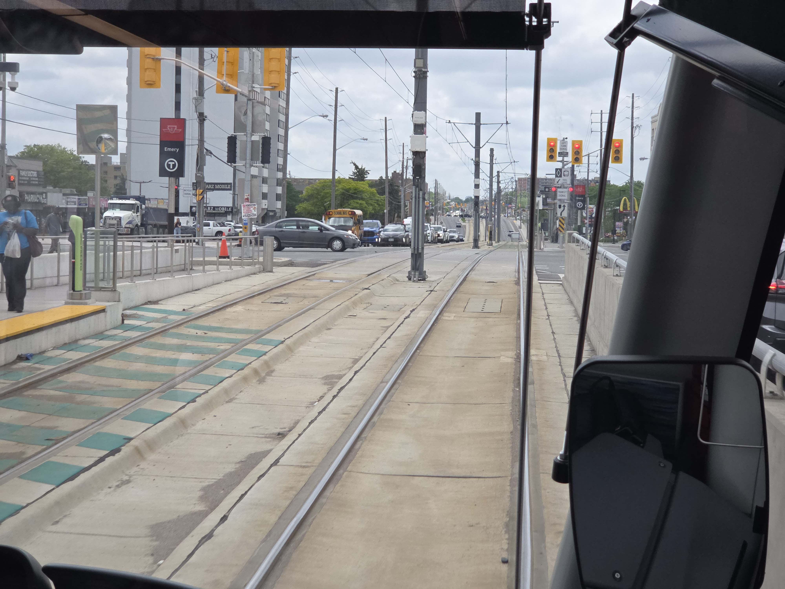
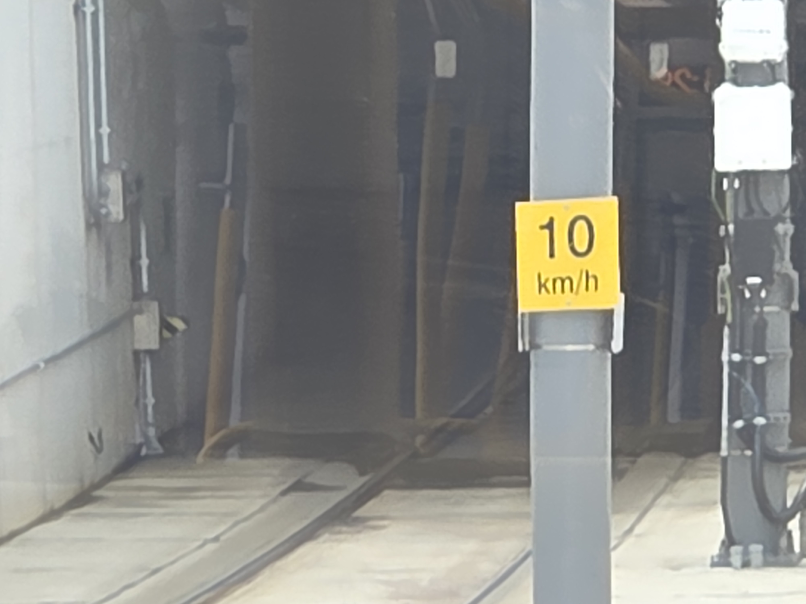
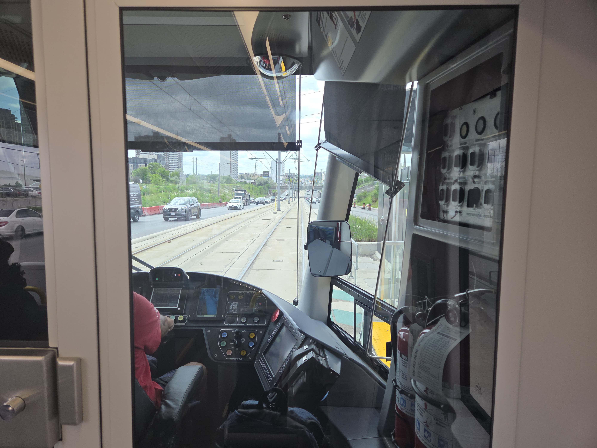
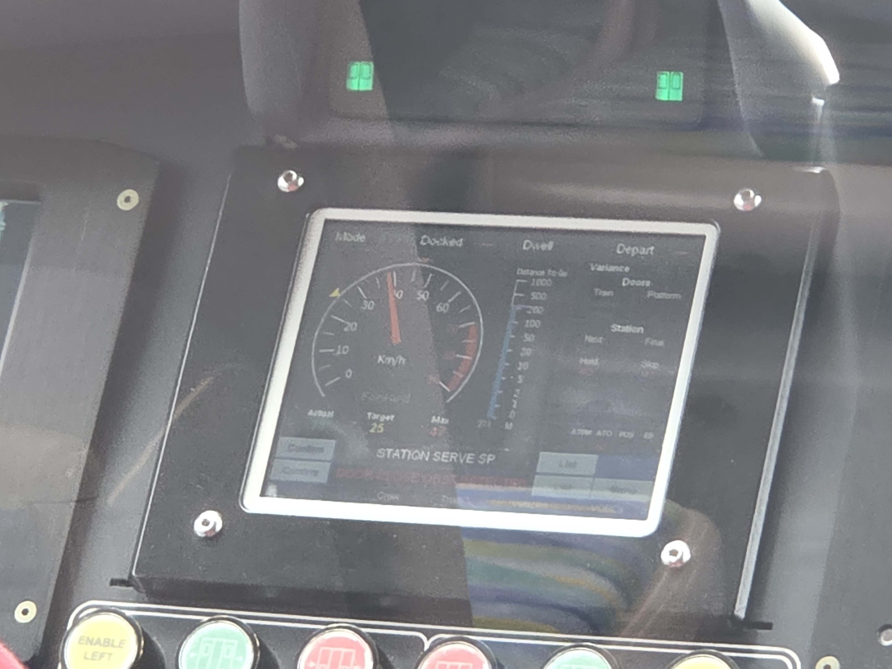

Is Toronto's Line 6 Still Slow 7 Months Later?
June 11, 2026:
Yes.
My trip down the full 10.3km of the line in the westbound direction took ~45 minutes (13.7km/h), not included time spent
waiting at Finch West station. This is better than the
55 minutes (11.2km/h) it took on opening day and slightly
worse than the
43 minutes it took when Jason from Not Just Bikes rode it. For comparison, my favorite part of the
Edmonton LRT (Capital line from Government Center Station to Century Park) does 9.9km in 18 minutes according to Google Maps for an average speed of 33km/h, more than
twice as fast. To say I am unimpressed is quite the understatement.

Google Maps screen shot of the Line 6/Finch West LRT.

A comparable length of LRT track in Edmonton.
What is particularly bothersome is that the reasons Line 6 is slow were predictable and mostly solvable.
- Basically no transit signal priority. Trains need to wait at most stoplights.
Some work has been done, but it's clearly not enough. Of the ~21 stop lights along the route (counted on Google Maps, may be inaccurate since the imagery is old)
we stopped at ~15 of them. I also saw quite a few instances of left turning cars having priority over the train.

It's also important to note that when pulling up to a red light the drivers like to coast, so even if it's green when the train gets to the intersection you still lose
time compared to if there was competently implemented transit signal priority.

-
Very low speed limits. In some places, like the 90 degree turn near the Humbler College, the low speed limit of 10km/h kinda makes sense for the alignment but begs the
question of why would you build a tunnel with such a tight curve in the first place.

Straight stretches between stations frequently see the train top out at ~45km/h which is pretty depressing.


-
Extremely slow acceleration. I swear these drivers are terrified of using more than like 20% of the throttle.
-
Too many stations. Jane and Finch station is only 350m away from Driftwood station. Overall there are 18 stations, so average station spacing is ~570m. This is
Compared to Edmonton's Capital line from Government Center Station to Century Park which only has 7 stations in about the same distance. Also a lot of stations are
placed so that the train has to stop right after it was just stopped at a red light which is particularly bothersome as a rider.
Unfortunately speed is not the only problem with Line 6. It's also poorly integrated into the surrounding community. For example, the walk from the Humbler College
station to the Humbler College bus loop is ~300m along a parking lot. Since nearly every station is in the center of Finch avenue you need to cross a huge road anytime
you want to get off. If your destination is one of the many shopping centers along the route then you also get to walk across huge parking lots with very minimal
sidewalks. Overall it's a pretty miserable experience.
I've also got a few minor gripes:
-
Why is the door chime so loud? I swear it's like 10dB louder than any other place on the TTC.
-
The connector from the Line 1 to Line 6 parts of Finch West station is long, doesn't have automatic doors, and had a leaky roof.
-
It would be nice if TTC staff told people playing noisy music in public to stop, not just turn it down slightly.
Overall I think Line 6 is a net positive, but it is frustrating to see so many avoidable mistakes made.
Once you are done here consider checking out this article
about transit signal priority on Line 6.